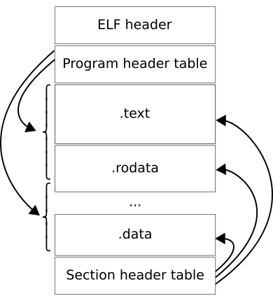

🧠 Understanding Binary Execution¶
🔍 ELF File: Top to Bottom¶
ELF files have a well-defined structure, which lets the OS load and run programs correctly. To analyze or exploit binaries, it helps to understand this layout step-by-step — just like opening a file and inspecting its parts.
1. ELF Header (File's "Table of Contents")¶
The ELF header is at the very top of the file. It tells us:
- What kind of file it is (executable, shared object, etc.)
- The target architecture (e.g., x86_64)
- The entry point address (where execution begins)
- Where to find the program headers and section headers in the file
You can see this info with:
$ readelf -h /bin/ls
ELF Header:
Magic: 7f 45 4c 46 02 01 01 00 00 00 00 00 00 00 00 00
Class: ELF64
Data: 2's complement, little endian
Version: 1 (current)
OS/ABI: UNIX - System V
ABI Version: 0
Type: DYN (Position-Independent Executable file)
Machine: Advanced Micro Devices X86-64
Version: 0x1
Entry point address: 0x6aa0
Start of program headers: 64 (bytes into file)
Start of section headers: 136232 (bytes into file)
Flags: 0x0
Size of this header: 64 (bytes)
Size of program headers: 56 (bytes)
Number of program headers: 13
Size of section headers: 64 (bytes)
Number of section headers: 31
Section header string table index: 30
2. Program Headers (Memory Mapping Instructions)¶
Program headers describe how the file should be loaded into memory. They specify which parts of the file become segments in memory, and their permissions (read, write, execute).
For exploitation, these tell us:
- Where the code segment (
.text) is loaded - Where data segments (
.data,.bss) go - Stack and heap locations aren’t here but are managed at runtime
Inspect with:
$ readelf -l /bin/ls
Elf file type is DYN (Position-Independent Executable file)
Entry point 0x6aa0
There are 13 program headers, starting at offset 64
Program Headers:
Type Offset VirtAddr PhysAddr
FileSiz MemSiz Flags Align
PHDR 0x0000000000000040 0x0000000000000040 0x0000000000000040
0x00000000000002d8 0x00000000000002d8 R 0x8
INTERP 0x0000000000000318 0x0000000000000318 0x0000000000000318
0x000000000000001c 0x000000000000001c R 0x1
[Requesting program interpreter: /lib64/ld-linux-x86-64.so.2]
LOAD 0x0000000000000000 0x0000000000000000 0x0000000000000000
0x0000000000003458 0x0000000000003458 R 0x1000
LOAD 0x0000000000004000 0x0000000000004000 0x0000000000004000
0x0000000000013091 0x0000000000013091 R E 0x1000
LOAD 0x0000000000018000 0x0000000000018000 0x0000000000018000
...
| Flag | Meaning |
|---|---|
R |
Readable |
W |
Writable |
X |
Executable |
A |
Allocated (loaded in memory) |
3. Section Headers (File Organization)¶
Sections are like pieces inside the file used during linking and debugging. Key sections include:
.text— contains executable instructions.data/.bss— global/static initialized and uninitialized variables.rodata— read-only data like strings.plt/.got— jump tables for dynamic linking (important for exploits)
Sections organize the file’s content but aren’t always loaded contiguously in memory.
Check with:
readelf -S /bin/ls
There are 31 section headers, starting at offset 0x21428:
Section Headers:
[Nr] Name Type Address Offset
Size EntSize Flags Link Info Align
[ 0] NULL 0000000000000000 00000000
0000000000000000 0000000000000000 0 0 0
[ 1] .interp PROGBITS 0000000000000318 00000318
000000000000001c 0000000000000000 A 0 0 1
[ 2] .note.gnu.pr[...] NOTE 0000000000000338 00000338
0000000000000030 0000000000000000 A 0 0 8
[ 3] .note.gnu.bu[...] NOTE 0000000000000368 00000368
0000000000000024 0000000000000000 A 0 0 4
[ 4] .note.ABI-tag NOTE 000000000000038c 0000038c
0000000000000020 0000000000000000 A 0 0 4
[ 5] .gnu.hash GNU_HASH 00000000000003b0 000003b0
000000000000004c 0000000000000000 A 6 0 8
...
[16] .text PROGBITS 0000000000004ce0 00004ce0
00000000000123a2 0000000000000000 AX 0 0 16
[17] .fini PROGBITS 0000000000017084 00017084
000000000000000d 0000000000000000 AX 0 0 4
[18] .rodata PROGBITS 0000000000018000 00018000
0000000000004dcc 0000000000000000 A 0 0 32
...
[25] .got PROGBITS 0000000000021c58 00020c58
00000000000003a0 0000000000000008 WA 0 0 8
[26] .data PROGBITS 0000000000022000 00021000
0000000000000278 0000000000000000 WA 0 0 32
[27] .bss NOBITS 0000000000022280 00021278
00000000000012c0 0000000000000000 WA 0 0 32

4. In-Memory Layout (What Really Matters)¶
When the program runs, the loader maps these segments into memory:
- The code lives in an executable segment (from
.text) - The data lives in writable segments (
.data,.bss) - The stack is set up for local variables and function calls
- The heap is used for dynamic memory allocation (
malloc, etc.)
Your goal as an exploiter is to understand how user input flows into memory regions and how those affect program control flow.
🔑 Summary¶
- The ELF header points to program and section headers
- Program headers describe memory layout
- Sections organize the file’s contents
- Understanding this layout helps you trace where code and data live, which is crucial for exploitation
Overwhelmed?
I was too, and still am. Give it time and it'll become natural.